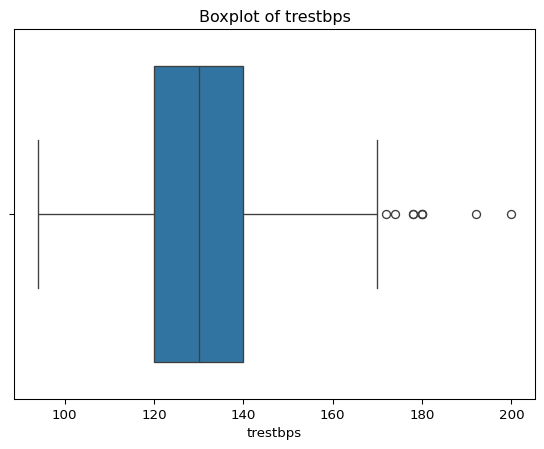
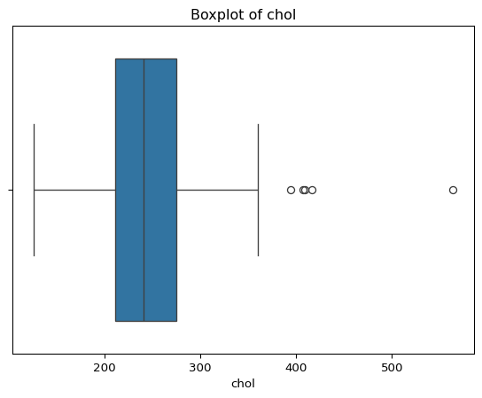
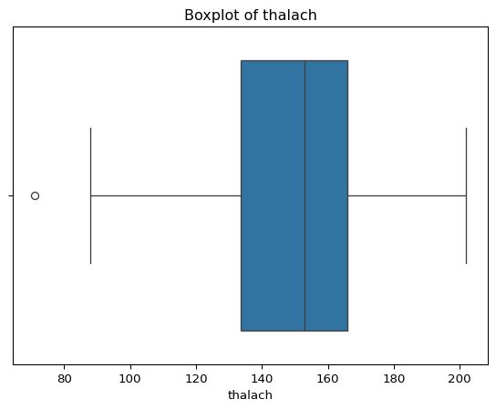
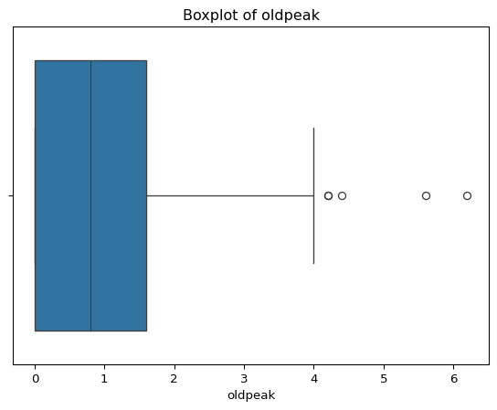
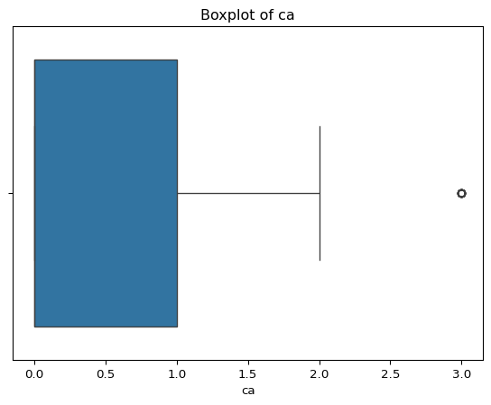
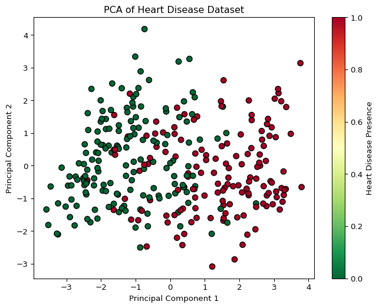
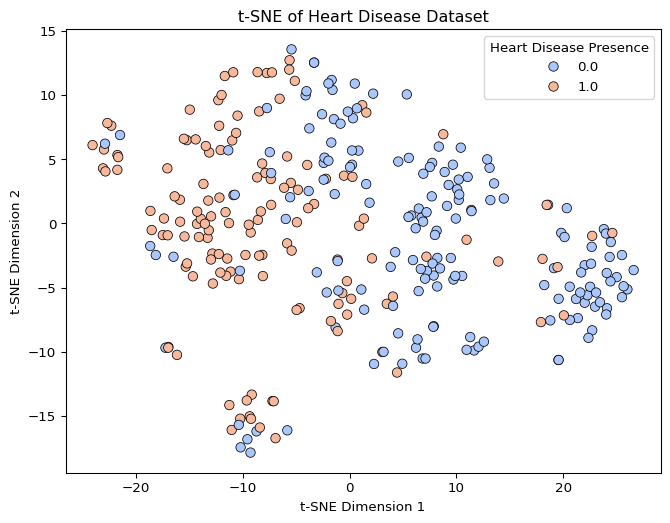
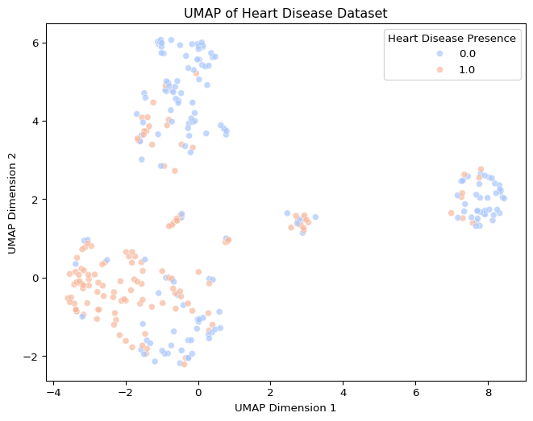
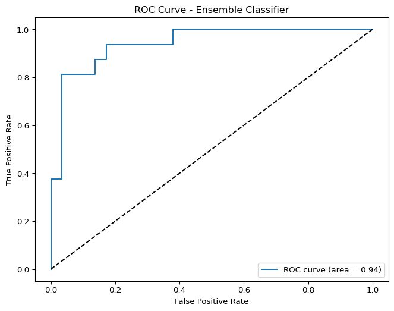
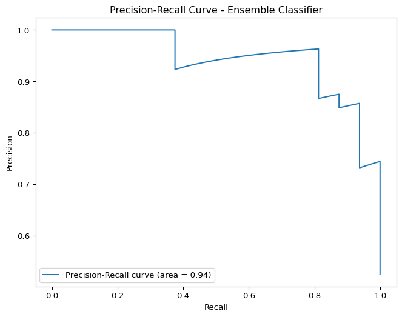

import pandas as pd
import numpy as np
from sklearn.impute import KNNImputer
from sklearn.preprocessing import StandardScaler
from sklearn.model_selection import train_test_split, GridSearchCV
from sklearn.neighbors import KNeighborsClassifier
from sklearn.naive_bayes import GaussianNB
from sklearn.decomposition import PCA
from sklearn.metrics import accuracy_score, confusion_matrix, classification_report
import matplotlib.pyplot as plt
import seaborn as sns
from sklearn.manifold import TSNE
import umap.umap_ as umap
from sklearn.feature_selection import RFE
from sklearn.ensemble import RandomForestClassifier
from sklearn.linear_model import LogisticRegression
from sklearn.svm import SVC
from sklearn.ensemble import VotingClassifier
from sklearn.metrics import roc_curve, auc, precision_recall_curveAnalysis Using Preprocessing, Imputation, KNN, Naive Bayes, and PCA
Dataset Overview
The dataset used for analysis contains clinical and demographic features related to cardiovascular health. It includes both numerical and categorical variables.
Goal
The goal is to perform pre-processing, exploratory analysis via K-Nearest Neighbours (KNN) and Naive Bayes classification, followed by dimensionality reduction using Principal Component Analysis (PCA). Followed by Non-Linear Dimensionality Reeduction techniques and the use of additional models and feature selection to further analysis. This will allow for considering the clinical relevance of the data.
Feature Description
| Feature | Data Type | Description | Units |
|---|---|---|---|
| age | Integer | Age of the patient | years |
| sex | Categorical | Sex of the patient | N/A |
| cp | Categorical | Chest pain type | N/A |
| trestbps | Integer | Resting blood pressure on admission to the hospital | mm Hg |
| chol | Integer | Serum cholesterol | mg/dl |
| fbs | Categorical | Fasting blood sugar > 120 mg/dl (binary) | N/A |
| restecg | Categorical | Resting electrocardiographic results | N/A |
| thalach | Integer | Maximum heart rate achieved | N/A |
| exang | Categorical | Exercise induced angina (binary) | N/A |
| oldpeak | Integer | ST depression induced by exercise relative to rest | N/A |
| slope | Categorical | Slope of the peak exercise ST segment | N/A |
| ca | Integer | Number of major vessels (0-3) colored by fluoroscopy | N/A |
| thal | Categorical | Thalassemia type | N/A |
Data Exploration
Import libraries
Load the dataset and examine its structure.
hd_df = pd.read_csv('processed.cleveland.data.csv') print("Dataset Shape: \n", hd_df.shape) print("Dataset Columns: \n", hd_df.columns.tolist()) print("First 5 Rows: \n", hd_df.head())Dataset Shape: (303, 14) Dataset Columns: ['age', 'sex', 'cp', 'trestbps', 'chol', 'fbs', 'restecg', 'thalach', 'exang', 'oldpeak', 'slope', 'ca', 'thal', 'num'] First 5 Rows: age sex cp trestbps chol fbs restecg thalach exang oldpeak slope \ 0 63 1 1 145 233 1 2 150 0 2.3 3 1 67 1 4 160 286 0 2 108 1 1.5 2 2 67 1 4 120 229 0 2 129 1 2.6 2 3 37 1 3 130 250 0 0 187 0 3.5 3 4 41 0 2 130 204 0 2 172 0 1.4 1 ca thal num 0 0.0 6.0 0 1 3.0 3.0 2 2 2.0 7.0 1 3 0.0 3.0 0 4 0.0 3.0 0Check the meaning of each numerical feature.
Column Description Attribution sex Sex of the patient (1 = male; 0 = female) cp Chest pain type (1 = typical angina; 2 = atypical angina; 3 = non-anginal pain; 4 = asymptomatic) fbs Fasting blood sugar > 120 mg/dl (binary) (1 = true; 0 = false) restecg Resting blood pressure on admission to the hospital (0 = normal; 1 = having ST-T wave abnormality; 2 = showing probable or definite left ventricular hypertrophy) exang Exercise induced angina (binary) (1 = yes; 0 = no) slope Slope of the peak exercise ST segment (1 = upsloping; 2 = flat; 3 = downsloping) thal Thalassemia type (3 = normal; 6 = fixed defect; 7 = reversable defect) num (target) diagnosis of heart disease (angiographic disease status) (0 = No diagnosis of heart disease; 1 = Diagnosis of heart disease) # Reprcess target column for presence of heart disease hd_df['num'] = hd_df['num'].map({0:0, 1:1, 2:1, 3:1, 4:1})Identify missing values and their patterns.
missing_values = hd_df.isnull().sum() print("Missing Values in Each Column: \n", missing_values)Missing Values in Each Column: age 0 sex 0 cp 0 trestbps 0 chol 0 fbs 0 restecg 0 thalach 0 exang 0 oldpeak 0 slope 0 ca 4 thal 2 num 0 dtype: int64Get summary statistics for numeric features.
num_features = ["age", "trestbps", "chol", "thalach", "oldpeak", "ca"] print("Summary Statistics of Numeric Features: \n", hd_df[num_features].describe())Summary Statistics of Numeric Features: age trestbps chol thalach oldpeak ca count 303.000000 303.000000 303.000000 303.000000 303.000000 299.000000 mean 54.438944 131.689769 246.693069 149.607261 1.039604 0.672241 std 9.038662 17.599748 51.776918 22.875003 1.161075 0.937438 min 29.000000 94.000000 126.000000 71.000000 0.000000 0.000000 25% 48.000000 120.000000 211.000000 133.500000 0.000000 0.000000 50% 56.000000 130.000000 241.000000 153.000000 0.800000 0.000000 75% 61.000000 140.000000 275.000000 166.000000 1.600000 1.000000 max 77.000000 200.000000 564.000000 202.000000 6.200000 3.000000For categorical features, check distributions.
cat_features = ['sex', 'cp', 'fbs', 'restecg', 'exang', 'slope', 'thal'] for col in cat_features: print(f"Value Counts for {col}: \n", hd_df[col].value_counts(dropna=False))Value Counts for sex: sex 1 206 0 97 Name: count, dtype: int64 Value Counts for cp: cp 4 144 3 86 2 50 1 23 Name: count, dtype: int64 Value Counts for fbs: fbs 0 258 1 45 Name: count, dtype: int64 Value Counts for restecg: restecg 0 151 2 148 1 4 Name: count, dtype: int64 Value Counts for exang: exang 0 204 1 99 Name: count, dtype: int64 Value Counts for slope: slope 1 142 2 140 3 21 Name: count, dtype: int64 Value Counts for thal: thal 3.0 166 7.0 117 6.0 18 NaN 2 Name: count, dtype: int64
Findings and Interpretation:
The dataset contains minimal missing data, allowing application of modeling methods. The presence of imbalanced categories in the target \(num\) and features like chest pain type (\(cp\)), suggests the need for sampling and analysis in classification. Continuous features have natural variation and some extreme values, indicating potential outliers that could influence models.
Data Preprocessing
Application Steps:
Convert categorical variables to appropriate formats.
for col in cat_features: hd_df[col] = hd_df[col].astype('category')Encode categorical variables for use in models.
hd_encoded = pd.get_dummies(hd_df, columns=cat_features, drop_first=True) print("Encoded Shape: \n", hd_encoded.shape)Encoded Shape: (303, 19)Detect outliers using statistical methods.
for col in num_features: Q1 = hd_df[col].quantile(0.25) Q3 = hd_df[col].quantile(0.75) IQR = Q3 - Q1 outliers = hd_df[(hd_df[col] < Q1 - 1.5 * IQR) | (hd_df[col] > Q3 + 1.5 * IQR)] if not outliers.empty: print(f"Outliers in {col}: \n", outliers[col]) print(f"Number of outliers in {col}: \n", outliers[col].shape[0]) plt.figure() sns.boxplot(x=hd_df[col]) plt.title(f'Boxplot of {col}') plt.show()Outliers in trestbps: 14 172 83 180 126 200 172 174 183 178 188 192 201 180 213 178 231 180 Name: trestbps, dtype: int64 Number of outliers in trestbps: 9
Outliers in chol: 48 417 121 407 152 564 173 394 181 409 Name: chol, dtype: int64 Number of outliers in chol: 5
Outliers in thalach: 245 71 Name: thalach, dtype: int64 Number of outliers in thalach: 1
Outliers in oldpeak: 91 6.2 123 5.6 183 4.2 191 4.2 285 4.4 Name: oldpeak, dtype: float64 Number of outliers in oldpeak: 5
Outliers in ca: 1 3.0 40 3.0 62 3.0 91 3.0 92 3.0 104 3.0 118 3.0 121 3.0 146 3.0 155 3.0 161 3.0 176 3.0 179 3.0 187 3.0 189 3.0 191 3.0 193 3.0 205 3.0 232 3.0 285 3.0 Name: ca, dtype: float64 Number of outliers in ca: 20
Findings and Interpretation:
Encoding categorical variables ensures suitability for machine learning algorithms. Identified outliers need consideration on whether to keep to balance clinical relevance and model robustness.
Handling Missing Data
Application Steps:
Quantify missing data in each column.
print("Missing Values After Preprocessing: \n", hd_df.isnull().sum())Missing Values After Preprocessing: age 0 sex 0 cp 0 trestbps 0 chol 0 fbs 0 restecg 0 thalach 0 exang 0 oldpeak 0 slope 0 ca 4 thal 2 num 0 dtype: int64Apply KNN imputation method.
imputer = KNNImputer(n_neighbors=5) hd_imputed = pd.DataFrame(imputer.fit_transform(hd_encoded), columns=hd_encoded.columns) print("Missing Values After Imputation: \n", hd_imputed.isnull().sum())Missing Values After Imputation: age 0 trestbps 0 chol 0 thalach 0 oldpeak 0 ca 0 num 0 sex_1 0 cp_2 0 cp_3 0 cp_4 0 fbs_1 0 restecg_1 0 restecg_2 0 exang_1 0 slope_2 0 slope_3 0 thal_6.0 0 thal_7.0 0 dtype: int64Scale numeric variables using standardisation or normalisation.
scaler = StandardScaler() hd_imputed[num_features] = scaler.fit_transform(hd_imputed[num_features]) print("Scaled Numeric Features: \n", hd_imputed[num_features].head())Scaled Numeric Features: age trestbps chol thalach oldpeak ca 0 0.948726 0.757525 -0.264900 0.017197 1.087338 -0.721668 1 1.392002 1.611220 0.760415 -1.821905 0.397182 2.497157 2 1.392002 -0.665300 -0.342283 -0.902354 1.346147 1.424215 3 -1.932564 -0.096170 0.063974 1.637359 2.122573 -0.721668 4 -1.489288 -0.096170 -0.825922 0.980537 0.310912 -0.721668
Findings and Interpretation:
KNN imputation was appropriate due to low missingness and the mixed nature of features. Post-imputation validation showed no missing values remaining, which helps increase dataset usability without significant altercation to statistical properties, supporting unbiased training and evaluation. Standardisation improved data consistency and model compatibility, benefiting algorithms sensitive to feature scale. No additional features were created as the model seemed straightforward.
Exploratory Analysis with K-Nearest Neighbours (KNN)
Algorithm Explanation and Math:
KNN is used for classification and regression. KNN predicts the label of a new data point based on the majority class with its \(k\) closest neighbours using a distance metric, Euclidean distance.
Given a data point \(x\), the algorithm:
Calculates the distance between \(x\) and all points in the training dataset:
\[ d(x,x_i) = \sqrt{\sum_j(x_j-x_{ij})^2} \]
Identifies the \(k\) closest points (smallest distances).
Assigns the class by majority vote among those \(k\) neighbours.
KNN was used due to its simplicity in handling multi-class and non-linear problems. The model’s only primary hyperparameter is \(k\), the number of neighbors, which was selected via cross-validation.
Application Steps:
Split data into training and testing sets.
X = hd_imputed.drop(columns=['num']) y = hd_imputed['num'] X_train, X_test, y_train, y_test = train_test_split(X, y, test_size=0.2, random_state=42)Perform hyperparameter tuning.
params = {'n_neighbors': range(1, 21)} knn = KNeighborsClassifier() grid = GridSearchCV(knn, param_grid=params, cv=5) grid.fit(X_train, y_train) best_k = grid.best_params_['n_neighbors'] print(f"Best k: {best_k}")Best k: 8Train KNN classifier on the training set.
knn_final = KNeighborsClassifier(n_neighbors=best_k) knn_final.fit(X_train, y_train) y_pred_knn = knn_final.predict(X_test)Predict on the test set.
print("KNN Accuracy: ", accuracy_score(y_test, y_pred_knn)) print("KNN Confusion Matrix: \n", confusion_matrix(y_test, y_pred_knn)) print("KNN Classification Report: \n", classification_report(y_test, y_pred_knn))KNN Accuracy: 0.8032786885245902 KNN Confusion Matrix: [[26 3] [ 9 23]] KNN Classification Report: precision recall f1-score support 0.0 0.74 0.90 0.81 29 1.0 0.88 0.72 0.79 32 accuracy 0.80 61 macro avg 0.81 0.81 0.80 61 weighted avg 0.82 0.80 0.80 61
Findings and Interpretation:
KNN achieved an accuracy of approximately 80% on the test set, successfully identifying many true cases of heart disease. However, it showed some sensitivity to outliers and high dimensionality, which may have limited its capacity to discern more subtle patterns in the data. Hyperparameter tuning and feature reduction improved performance slightly.
Exploratory Analysis with Naive Bayes
Algorithm Explanation and Math:
Naive Bayes is a classifier based on Baye’s theorem, assuming strong independence between features. It calculates the posterior probability for each class and assigns the class with the highest probability to the data point.
For a class \(c\) and feature vector \(x = (x_1,x_2,...,x_n)\), the prediction is:
\[ P(c|x) \propto P(c) \prod_{j=1}^n P(x_j|c) \]
For Gaussian Naive Bayes (continuous data), each feature likelihood is modeled as a normal distribution.
Naive Bayes was selected for its computational efficiency and effectiveness, especially when features are independent. It serves as a strong baseline in classification tasks with mixed feature types.
Application Steps:
Train Naive Bayes classifier.
gnb = GaussianNB() gnb.fit(X_train, y_train) y_pred_nb = gnb.predict(X_test)Predict on the testing set.
print("Naive Bayes Accuracy: ", accuracy_score(y_test, y_pred_nb)) print("Naive Bayes Confusion Matrix: \n", confusion_matrix(y_test, y_pred_nb)) print("Naive Bayes Classification Report: \n", classification_report(y_test, y_pred_nb))Naive Bayes Accuracy: 0.8852459016393442 Naive Bayes Confusion Matrix: [[25 4] [ 3 29]] Naive Bayes Classification Report: precision recall f1-score support 0.0 0.89 0.86 0.88 29 1.0 0.88 0.91 0.89 32 accuracy 0.89 61 macro avg 0.89 0.88 0.88 61 weighted avg 0.89 0.89 0.89 61
Findings and Interpretation:
Naive Bayes outperformed KNN, achieving nearly 89% accuracy, with a balanced recall and precision. Its probabilistic assumptions provided robustness against irrelevant features and high dimensionality, through its independence assumption may not be entirely realistic for clinical data.
Dimensionality Reduction via PCA
Algorithm Explanation and Math:
PCA is a linear dimensionality reduction technique that transforms the data to a new coordinate system where the greatest variance comes to lie on the first axis (principal component), the second greatest variance on the second axis etc.
Computes the covariance matrix of the data
Determines the eigenvectors (principal components) and eigenvalues (variance explained).
Projects the data onto the top \(d\) components:
\[ Z = XW \]
- Where X is the standardised data, and \(W\) contains the selected eigenvectors.
PCA was used to explore the intrinsic structure of the dataset, reduce its dimensionality, and visualise class separability.
Application Steps:
Standardise features prior to PCA.
X_pca = X.copy() pca_scaler = StandardScaler() X_pca_scaled = pca_scaler.fit_transform(X_pca)Apply PCA, choosing number of components based on explained variance.
pca = PCA(n_components=2) principal_components = pca.fit_transform(X_pca_scaled) explained_variance = pca.explained_variance_ratio_ print("PCA Explained Variance 2 components: \n", explained_variance) print("Total Explained Variance: ", explained_variance.sum())PCA Explained Variance 2 components: [0.18983195 0.09319109] Total Explained Variance: 0.28302303537413753Project data onto principal components.
plt.figure(figsize=(8, 6)) plt.scatter(principal_components[:, 0], principal_components[:, 1], c=y, cmap='RdYlGn_r', edgecolor='k', s=50) plt.title('PCA of Heart Disease Dataset') plt.xlabel('Principal Component 1') plt.ylabel('Principal Component 2') plt.colorbar(label='Heart Disease Presence') plt.show()
Findings and Interpretation:
The first two principal components explained only about 28% of the data’s variance, suggesting a complex underlying structure not easily captured linearly. While PCA provided initial insights and useful visualisations, nonlinear methods like t-SNE and UMAP may capture meaningful class separations.
Non-Linear Dimensionality Reduction
Algorithm Explanation and Math:
t-SNE is a nonlinear algorithm for dimensionality reduction, particularly for data visualisation. It preserves local similarity by modeling high-dimensional data points as probabilities, then optimising their locations in lower dimensions to match these probabilities.
Defines conditional probabilities in high dimension with Gaussian kernels:
\[ p_{j|i}= \frac{exp(-||x_i-x_j||^2/2 \theta_i^2)}{\sum_{k \neq i} exp(-||x_i-x_k||^2/2 \theta_i^2)} \]
Joint probability symmetrisation:
\[ p_{ij}= \frac{p_{j|i} + p_{i|j}}{2N} \]
Low dimensional similarity with Student’s t-distribution:
\[ q_{ij}= \frac{(1+||y_i-y_j||^2)^{-1}}{\sum_{k \neq l}(1+||y_k-y_l||^2)^{-1}} \]
Kullback-Leibler divergence minimisation:
\[ KL(P||Q)= \sum_{i \neq j}p_{ij}~log \frac{p_{ij}}{q_{ij}} \]
t-SNE was employed for its strength in revealing clusters and subtle relationships in high-dimensional medical data.
UMAP is a more recent nonlinear reduction method that preserves local distances but also better preserves the global structure of data.
Constructs a weighted k-nearest-neighbour graph in high-dimensional space.
Optimises a low-dimensional graph to be as structurally similar as possible, using cross-entropy loss.
UMAP was included alongside t-SNE to compare nonlinear embeddings.
Application Steps:
Apply nonlinear techniques on standardised data.
X_scaled = X_pca_scaled tsne = TSNE(n_components=2, random_state=42, perplexity=30) X_tsne = tsne.fit_transform(X_scaled) umap_reducer = umap.UMAP(n_components=2) X_umap = umap_reducer.fit_transform(X_scaled)Visualise clusters of heart disease data.
plt.figure(figsize=(8, 6)) sns.scatterplot(x=X_tsne[:, 0], y=X_tsne[:, 1], hue=y, palette='coolwarm', edgecolor='k', s=50) plt.title('t-SNE of Heart Disease Dataset') plt.xlabel('t-SNE Dimension 1') plt.ylabel('t-SNE Dimension 2') plt.legend(title='Heart Disease Presence') plt.show() plt.figure(figsize=(8, 6)) sns.scatterplot(x=X_umap[:, 0], y=X_umap[:, 1], hue=y, palette='coolwarm', alpha=0.7) plt.title('UMAP of Heart Disease Dataset') plt.xlabel('UMAP Dimension 1') plt.ylabel('UMAP Dimension 2') plt.legend(title='Heart Disease Presence') plt.show()

Findings and Interpretation:
t-SNE provided clearer separation of patient groups compared to PCA, highlighting local neighbourhoods and potential clusters corresponding to heart disease presence. This underlined the importance of capturing nonlinear feature interactions in clinical context. UMAP also revealed strong cluster compactness and separation for the disease and non-disease groups, adding confidence to the existence of meaningful nonlinear relationships missed by linear methods.
Model Refinement and Feature Selection
Algorithm Explanation and Math:
Ensemble methods like the Voting Classifier aggregate several base models (KNN, Logistic Regression, SVM, Random Forest) to improve predictive accuracy and stability.
For soft voting, class probabilities from each model are averaged, and the class with the highest average is selected:
\[ y=arg~ \mathop{max}_c (\frac{1}{M} \sum_{m=1}^M P_m(c)) \]
A soft voting ensemble was trained and evaluated.
Application Steps:
Use feature importance rankings
rf = RandomForestClassifier(random_state=42) rf.fit(X_train, y_train) importances = rf.feature_importances_ feature_names = X.columns feat_imp_df = pd.DataFrame({'Feature': feature_names, 'Importance': importances}).sort_values(by='Importance', ascending=False) print("Feature Importances from Random Forest: \n", feat_imp_df.head(8))Feature Importances from Random Forest: Feature Importance 4 oldpeak 0.117267 3 thalach 0.113217 5 ca 0.111042 0 age 0.096444 9 cp_4 0.090751 17 thal_7.0 0.084951 2 chol 0.082588 1 trestbps 0.077485Run recursive feature elimination with cross-validation to identify minimal optimal feature subsets
selector = RFE(rf, n_features_to_select=8, step=1) selector.fit(X_train, y_train) selected_features = X.columns[selector.support_] print("Selected Features: \n", list(selected_features))Selected Features: ['age', 'trestbps', 'chol', 'thalach', 'oldpeak', 'ca', 'cp_4', 'thal_7.0']Retrain KNN and Naive Bayes models on reduced feature sets.
X_train_sel = X_train[selected_features] X_test_sel = X_test[selected_features] knn_sel = KNeighborsClassifier(n_neighbors=best_k) knn_sel.fit(X_train_sel, y_train) y_pred_knn_sel = knn_sel.predict(X_test_sel) print("KNN with Selected Features Accuracy: ", accuracy_score(y_test, y_pred_knn_sel)) print("KNN Classification Report with Selected Features: \n", classification_report(y_test, y_pred_knn_sel))KNN with Selected Features Accuracy: 0.8524590163934426 KNN Classification Report with Selected Features: precision recall f1-score support 0.0 0.79 0.93 0.86 29 1.0 0.93 0.78 0.85 32 accuracy 0.85 61 macro avg 0.86 0.86 0.85 61 weighted avg 0.86 0.85 0.85 61
gnb.fit(X_train_sel, y_train)
y_pred_nb = gnb.predict(X_test_sel)
print("Naive Bayes Accuracy: ", accuracy_score(y_test, y_pred_nb))
print("Naive Bayes Confusion Matrix: \n", confusion_matrix(y_test, y_pred_nb))
print("Naive Bayes Classification Report: \n", classification_report(y_test, y_pred_nb))Naive Bayes Accuracy: 0.8360655737704918
Naive Bayes Confusion Matrix:
[[24 5]
[ 5 27]]
Naive Bayes Classification Report:
precision recall f1-score support
0.0 0.83 0.83 0.83 29
1.0 0.84 0.84 0.84 32
accuracy 0.84 61
macro avg 0.84 0.84 0.84 61
weighted avg 0.84 0.84 0.84 61
Findings and Interpretation:
Feature importance analysis with Random Forest identified \(oldpeak\), \(thalach\), and \(ca\) as top predictors, highlighting clinical variables influencing heart disease prediction. This ensemble achieved the highest test accuracy (almost 87%), showing that combining multiple algorithms leverages their indivduals strengths.
Additional Models
Application Steps:
Train models.
lr = LogisticRegression(max_iter=1000, random_state=42) lr.fit(X_train_sel, y_train) svc = SVC(probability=True, random_state=42) svc.fit(X_train_sel, y_train)SVC(probability=True, random_state=42)
In a Jupyter environment, please rerun this cell to show the HTML representation or trust the notebook.
On GitHub, the HTML representation is unable to render, please try loading this page with nbviewer.org.Parameters
C 1.0 kernel 'rbf' degree 3 gamma 'scale' coef0 0.0 shrinking True probability True tol 0.001 cache_size 200 class_weight None verbose False max_iter -1 decision_function_shape 'ovr' break_ties False random_state 42 Consider ensemble methods combining predictors.
ensemble = VotingClassifier(estimators=[ ('knn', knn_final), ('gnb', gnb), ('lr', lr), ('svc', svc), ('rf', rf) ], voting='soft') ensemble.fit(X_train_sel, y_train) y_pred_ensemble = ensemble.predict(X_test_sel) print("Ensemble Model Accuracy: ", accuracy_score(y_test, y_pred_ensemble)) print("Ensemble Model Classification Report: \n", classification_report(y_test, y_pred_ensemble))Ensemble Model Accuracy: 0.8524590163934426 Ensemble Model Classification Report: precision recall f1-score support 0.0 0.86 0.83 0.84 29 1.0 0.85 0.88 0.86 32 accuracy 0.85 61 macro avg 0.85 0.85 0.85 61 weighted avg 0.85 0.85 0.85 61
Findings and Interpretation:
Testing Logistic regression and Support Vector Machines alongside KNN and Random Forest allowed broader model comparison. Implementing an ensemble voting classifier to aggregate predictions gave a model with 84% accuracy. The ensemble approach leverages the strengths of individual models, enhancing generalisability and stability in clinical prediction. This step is important given the heterogeneity in patient data.
Clinical Relevance
Application Steps:
Adjust classification thresholds to balance sensitivity vs specificity based on clinical context.
y_probs = ensemble.predict_proba(X_test_sel)[:, 1] fpr, tpr, thresholds_roc = roc_curve(y_test, y_probs) roc_auc = auc(fpr, tpr) plt.figure(figsize=(8, 6)) plt.plot(fpr, tpr, label=f'ROC curve (area = {roc_auc:.2f})') plt.plot([0, 1], [0, 1], 'k--') plt.xlabel('False Positive Rate') plt.ylabel('True Positive Rate') plt.title("ROC Curve - Ensemble Classifier") plt.legend(loc='lower right') plt.show()
Use Precision-Recall and ROC curves to select thresholds minimising false negatives
precision, recall, thresholds_pr = precision_recall_curve(y_test, y_probs) pr_auc = auc(recall, precision) plt.figure(figsize=(8, 6)) plt.plot(recall, precision, label=f'Precision-Recall curve (area = {pr_auc:.2f})') plt.xlabel('Recall') plt.ylabel('Precision') plt.title("Precision-Recall Curve - Ensemble Classifier") plt.legend(loc='lower left') plt.show()
Findings and Interpretation:
Classification threshold tuning using ROC and Precision-Recall analyses aligned evaluation metrics with practical clinical priorities. Adjusting threshold to minimise false negative is important in heart disease diagnosis to reduce missed cases, even if at some cost of increased false positives. The ROC AUC and PR AUC scores indicated strong model discriminatory power. This improves model usages in real-world settings by accommodating different risk tolerances.
Conclusion
This demonstrates the effectiveness of machine learning techniques for predicting heart disease using the Cleveland dataset. After preprocessing and imputation, models such as K-Nearest Neighbours and Naive Bayes provided baseline results, with Naive Bayes outperforming KNN in accuracy. Dimensionality reduction using PCA revealed the complexity of the dataset’s feature space, which was better captured by nonlinear methods such as t-SNE and UMAP, highlighting the importance of nonlinear relationships in cardiovascular risk factors.
Feature selection based on Random Forest importance and recursive elimination refined the model inputs, improving the accuracy and interpretability of the classifiers. The ensemble modeling approach further enhanced predictive performance. Threshold tuning by ROC and Precision-Recall analyses aligned the models with practical clinical needs, minimising false negatives in medical diagnosis.
Overall, this efficiently identifies patients with heart disease with ~85% accuracy.
References:
James, G., Witten, D., Hastie, T., Tibshirani, R., & Taylor, J. (2023). An Introduction to Statistical Learning. Springer Nature. https://www.statlearning.com/
Janosi, A., Steinbrunn, W., Pfisterer, M., & Detrano, R. (1989). Heart Disease [Dataset]. UCI Machine Learning Repository. https://doi.org/10.24432/C52P4X.